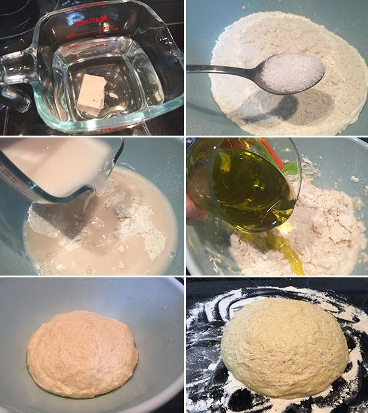

Menu
-
Inicio
-
Ingredientes
-
Videos
Preparacion
- Para la masa, colocar sobre la mesada la harina, hacer un hoyo en el centro y sumar la sal. Reservar.
- Colocar en un recipiente el agua tibia, disolver la levadura y dejar fermentar unos 3 minutos.
Incorporar, poco a poco, el agua y el aceite en el hoyo de la harina e ir mezclando siempre de a poco.
- Amasar unos 10 minutos, hasta obtener un bollo liso y suave. Cubrirlo con un paño o repasador húmedo,
reservar en un lugar cálido 40 minutos aproximadamente y dejar leudar hasta que duplique su volumen.
- Estirar la masa con palote o con las manos aceitadas, darle forma circular, buscando que tenga un espesor no muy fino,
de 3 centímetros. Disponer cada masa en la pizzera aceitada.
- Distribuir el bollo -con las manos- en la pizzera aceitada. Hornear a temperatura fuerte unos 10 minutos, retirar.
- Distribuir 1 cucharón (es a gusto, la cantidad) de salsa y cocinar apenas unos minutos más.
